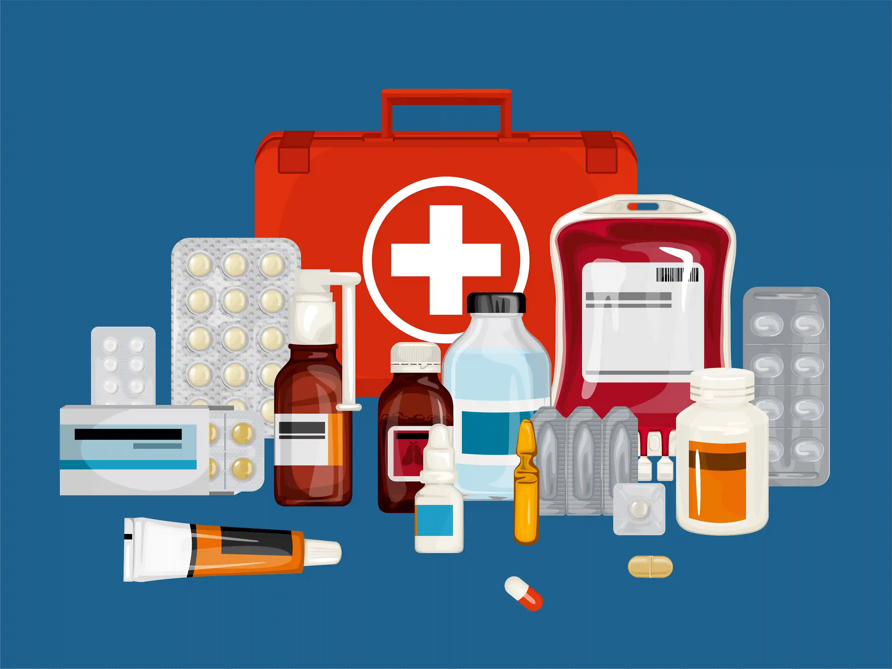
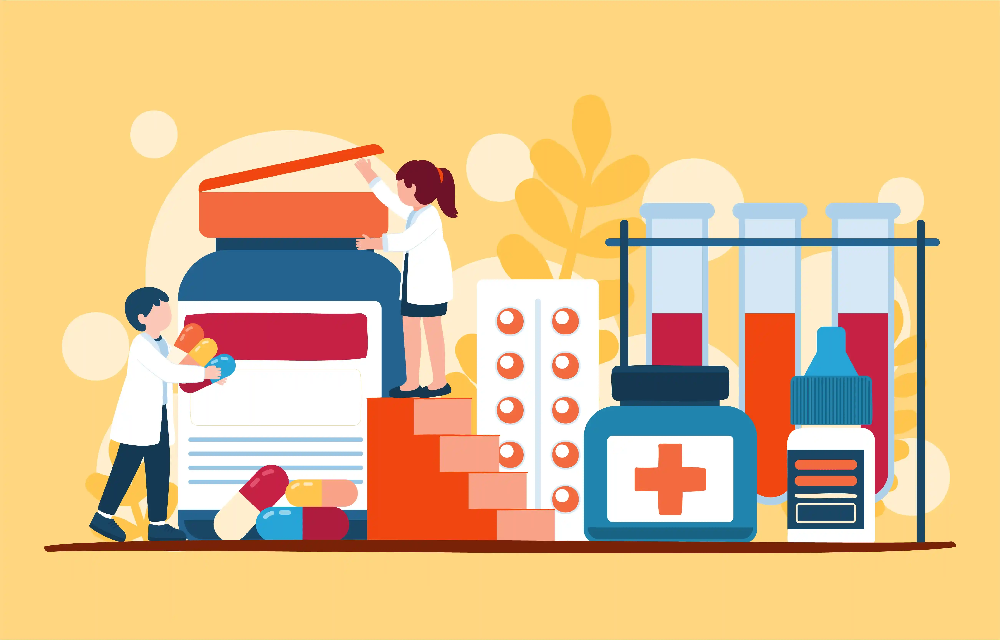

Authentic Medicines vs. Counterfeits: Why to Buy from Hospital Pharmacies
Every time you purchase medicine, you make a choice that directly affects your health and safety. Choosing a trusted pharmacy in Ramnad over an unlicensed street shop or unverified online seller is one of the most important health decisions a patient or family can make. At Gani Hospital Medicals, we stock only genuine medicines — because your recovery depends entirely on the quality of what you take.

Introduction: The Hidden Danger of Counterfeit Medicine
When a doctor prescribes medicine, they do so with a specific expectation — that the genuine medicine dispensed contains the correct active ingredient, in the correct dosage, stored and handled correctly. Counterfeit or substandard drugs shatter this expectation entirely, turning treatment into a health risk.
The World Health Organisation (WHO) estimates that approximately 10% of medicines in low- and middle-income countries are substandard or falsified. In India, the problem is real — counterfeit medicines are found in unlicensed shops, unverified online platforms, and informal vendors who prioritise profit over patient safety.
At Gani Hospital Medicals — the hospital pharmacy in Ramanathapuram — we operate with a single commitment: every tablet, capsule, injection, or syrup dispensed to our patients is a certified, genuine medicine sourced from licensed pharmaceutical manufacturers. As a trusted pharmacy in Ramnad, our patients deserve nothing less.
This guide explains the real difference between authentic and counterfeit medicines, why it matters for your health, and why purchasing quality medicine from Gani Hospital Medicals is always the safest choice.
What Are Counterfeit and Substandard Medicines?
Counterfeit medicines are fake drugs deliberately manufactured to look like the original product. Substandard medicines are authorised products that fail to meet quality standards — due to poor manufacturing, improper storage, or expired ingredients.
Both types pose serious dangers, and patients often cannot tell the difference with the naked eye. Here is what fake or substandard drugs may contain:
- No active ingredient — the drug has zero therapeutic effect
- Wrong active ingredient — may cause unexpected reactions
- Incorrect dosage — too much or too little of the drug substance
- Harmful fillers or contaminants — chalk, starch, industrial chemicals
- Bacterial or fungal contamination — due to improper manufacturing
- Expired or degraded active compounds — ineffective and potentially toxic
Counterfeit medicines are particularly dangerous in treatments for diabetes, hypertension, antibiotics, anti-malarials, cancer drugs, and paediatric medicines. In Ramanathapuram, where seasonal diseases like fever and malaria are prevalent, access to genuine medicines from a reliable hospital pharmacy in Ramanathapuram is critical.
Genuine Medicines vs. Counterfeit Medicines: Key Differences
Understanding what separates quality medicine from a counterfeit product helps patients make informed choices. The following comparison highlights the most important differences:
| Factor | Genuine Medicine | Counterfeit Medicine |
|---|---|---|
| Active Ingredient | Correct type and exact dosage | Wrong, absent, or incorrect amount |
| Manufacturing | WHO-GMP certified facility | Unknown, unlicensed facility |
| Storage | Temperature-controlled, clean | Often improper, uncontrolled |
| Packaging | Proper seals, batch no., expiry | Poor print quality, missing details |
| Regulatory Approval | CDSCO / state drug authority approved | No valid licence or approval |
| Clinical Effect | Works as prescribed by doctor | May fail completely or cause harm |
| Source | Licensed distributor → pharmacy | Unknown or illegal supply chain |
| Price | Fair, regulated MRP | Often suspiciously cheaper |
At Gani Hospital Medicals, every medicine on our shelf is a verified genuine medicine from a licensed supplier — the gold standard of a trusted pharmacy in Ramnad.
Health Risks of Counterfeit and Poor-Quality Medicines

The consequences of taking counterfeit or substandard medicine are far more serious than simply not getting better. Patients who unknowingly consume fake drugs face the following risks:
1. Treatment Failure
When a genuine medicine is replaced by a counterfeit, the disease progresses unchecked. A patient with a bacterial infection who takes a fake antibiotic will not recover — and may develop life-threatening complications.
2. Antibiotic Resistance
Sub-therapeutic doses of antibiotics — a hallmark of counterfeit products — are the fastest way to breed drug-resistant bacteria. This is a growing public health crisis across Tamil Nadu and India. Patients who buy quality medicine from a hospital pharmacy in Ramanathapuram help prevent this problem.
3. Serious Side Effects and Organ Damage
Counterfeit tablets may contain industrial chemicals, harmful dyes, or toxins that damage the liver, kidneys, or cardiovascular system. Children are especially vulnerable to such contaminants.
4. Delayed Recovery and Increased Costs
A patient who purchases cheap, low-quality medicine and fails to recover often ends up spending far more on repeated consultations, hospitalisation, and alternative treatments. Choosing Gani Hospital Medicals — the trusted pharmacy in Ramnad — from the start is always more economical in the long run.
5. Death
In severe cases — particularly with counterfeit anti-malarials, insulin, cardiac drugs, or paediatric medicines — the consequences can be fatal. This is not an exaggeration. WHO data confirms thousands of deaths globally each year are linked to falsified medicines.
Why a Hospital Pharmacy in Ramanathapuram Is Safer
Not all pharmacies operate to the same standard. A hospital pharmacy in Ramanathapuram like Gani Hospital Medicals operates under strict regulatory oversight, clinical supervision, and ethical supply chain practices — unlike unlicensed street shops or unverified online sellers.
Here is why buying from a trusted pharmacy in Ramnad makes a measurable difference:
- Licensed procurement: Medicines are purchased only from registered pharmaceutical distributors with full documentation
- Prescription validation: Prescription-only medicines are dispensed only with a valid doctor's prescription — no shortcuts
- Cold chain compliance: Temperature-sensitive medicines (insulin, vaccines, eye drops) are stored at correct temperatures
- Pharmacist supervision: Every dispensing event is reviewed by a qualified pharmacist who checks for drug interactions, dosage accuracy, and allergies
- Expiry date monitoring: Medicines approaching expiry are removed from shelves automatically
- Patient counselling: Pharmacists at Gani Hospital Medicals guide patients on correct usage, timing, dosage, and storage of every medicine dispensed
- Regulatory compliance: Fully compliant with Tamil Nadu Drug Control Authority and CDSCO standards for quality medicine dispensing
How to Identify Counterfeit Medicines — Warning Signs
While it is very difficult for the average patient to confirm whether a medicine is authentic without laboratory testing, there are visible warning signs that a product may be counterfeit or substandard. Always report suspicious medicines to your pharmacist.
- Missing or incorrect batch number and manufacturing/expiry date
- Poor print quality on packaging — blurred text, incorrect spelling, faded colours
- Unusual appearance — different tablet colour, size, shape, or smell compared to previous purchases
- Broken or tampered seals on bottles, blisters, or cartons
- Suspiciously low price — far below the MRP (Maximum Retail Price) printed on the pack
- No manufacturer address or drug licence number on the label
- Different texture or taste compared to what you have taken before
- Purchased from an unlicensed seller — street vendor, informal market, or unverified website
When in doubt, always bring your medicine to Gani Hospital Medicals — the trusted pharmacy in Ramnad — for verification before consuming it.
Gani Hospital Medicals — Your Trusted Pharmacy in Ramanathapuram

Gani Hospital Medicals is the in-house hospital pharmacy in Ramanathapuram that patients and doctors at Gani Hospital trust for every prescription, every day. We are proud to be recognised as the most trusted pharmacy in Ramnad for our unwavering commitment to genuine medicines and patient safety.
What Makes Gani Hospital Medicals Different
- 100% genuine medicines — sourced only from WHO-GMP certified and CDSCO-approved pharmaceutical manufacturers
- Complete medicine range — prescription drugs, OTC medicines, surgical supplies, and paediatric formulations
- Qualified pharmacists on duty — ready to answer your queries about dosage, interactions, and storage
- Integrated with Gani Hospital — medicines prescribed by our doctors are directly available at our pharmacy, eliminating any confusion
- Proper cold chain — refrigerated storage for insulin, eye drops, vaccines and other sensitive medicines
- Transparent pricing — all medicines sold at MRP with no hidden charges
- 24/7 availability — emergency medicines available round the clock for admitted and outpatient cases
- Prescription verification — no prescription-only drug dispensed without a valid doctor's prescription
Choosing Gani Hospital Medicals is not just about convenience — it is a commitment to your health. Quality medicine from a certified hospital pharmacy in Ramanathapuram is the only guarantee that your treatment will work as your doctor intended.
Tips to Buy Genuine Medicines Safely in Ramanathapuram
Here are practical tips every patient and family in Ramanathapuram should follow to ensure they always receive genuine medicines:
- Always buy medicines from a licensed, trusted pharmacy in Ramnad — such as Gani Hospital Medicals
- Check the MRP, batch number, manufacturing date, and expiry date on every pack before purchasing
- Never buy prescription medicines without a valid doctor's prescription
- Avoid purchasing medicines from street vendors, informal markets, or unverified websites
- Do not be tempted by prices that are significantly below the printed MRP — cheap medicine is often fake medicine
- Inspect packaging carefully — look for proper seals, correct spelling, and clear print
- Ask your pharmacist to explain the correct dosage, timing, and storage of every medicine
- Report suspicious products to your pharmacist or the Tamil Nadu Drug Control Authority
- Store medicines at home as instructed — incorrect home storage can also degrade quality medicine
- For chronic conditions like diabetes, hypertension, or thyroid — always refill from the same hospital pharmacy in Ramanathapuram to maintain consistency
Medicines Most Commonly Counterfeited in India
Certain drug categories are more frequently counterfeited due to high demand, high prices, or difficulty in detection. Patients on these medicines must be especially careful and always use a trusted pharmacy in Ramnad:
- Antibiotics — amoxicillin, ciprofloxacin, azithromycin
- Anti-malarials — chloroquine, artemisinin combinations — critical in regions like Ramanathapuram
- Insulin and diabetes medicines — incorrect potency can cause blood sugar emergencies
- Cancer drugs (oncology medicines) — extremely high value; frequently targeted
- Antihypertensives — amlodipine, losartan — fake versions leave blood pressure uncontrolled
- Paediatric syrups — children are most vulnerable to harmful contaminants in fake products
- Vitamins and supplements — often sold with false claims and incorrect dosages
- COVID-related medicines and antivirals — heavily counterfeited during and after the pandemic
For every one of these categories, Gani Hospital Medicals stocks only certified genuine medicines — because quality medicine is non-negotiable when lives are at stake.
The Role of a Pharmacist in Ensuring Medicine Safety
A qualified pharmacist is your first line of defence against medication errors and counterfeit products. At Gani Hospital Medicals — the hospital pharmacy in Ramanathapuram — our pharmacists perform critical safety checks at every dispensing point:
- Verifying the prescription against the patient's medical history
- Checking for drug-drug interactions and contraindications
- Confirming correct dosage and frequency before dispensing
- Educating patients on proper use, storage, and side effect monitoring
- Flagging any medicines that look suspicious or do not match batch records
- Advising on generic vs. branded genuine medicines when appropriate
This level of professional oversight simply does not exist at unlicensed street shops — another vital reason to choose a trusted pharmacy in Ramnad backed by qualified medical professionals.
Related Services at Gani Hospital, Ramanathapuram
Gani Hospital Medicals is part of the comprehensive healthcare ecosystem at Gani Hospital, Ramanathapuram. Explore our related services:
- All Medical Services at Gani Hospital — paediatrics, general medicine, gynaecology and more
- Book a Doctor Appointment — consult our doctors and get your prescription at Gani Hospital Medicals
- Contact Gani Hospital Ramanathapuram — reach us for pharmacy queries, emergencies and directions
- Common Childhood Illnesses Guide — know when to seek medical care and the right medicines
- Child Vaccination Schedule — vaccines available at Gani Hospital Medicals
Conclusion
Your medicine is only as good as its source. Genuine medicines from a trusted pharmacy in Ramnad are the foundation of effective treatment. Counterfeit and substandard drugs are not just ineffective — they are actively dangerous, capable of causing treatment failure, serious side effects, drug resistance, and even death.
Every patient in Ramanathapuram deserves access to quality medicine that is safe, effective, and correctly dispensed. That is the promise of Gani Hospital Medicals — the hospital pharmacy in Ramanathapuram that serves every patient with the same standard of care we extend to our own families.
Do not compromise on your health. Buy only genuine medicines from Gani Hospital Medicals — Ramanathapuram's most trusted pharmacy in Ramnad for verified quality medicine, expert pharmacist guidance, and round-the-clock availability.
Get Genuine Medicines from Gani Hospital Medicals, Ramanathapuram
Only certified, quality medicines — dispensed by qualified pharmacists, 24 hours a day.
Visit Gani Hospital Medicals →Trusted Medical References
- WHO – Substandard and Falsified Medical Products
- CDSCO – Central Drugs Standard Control Organisation, India
- FDA – Counterfeit Medicine Safety
Frequently Asked Questions About Genuine Medicines & Hospital Pharmacy
How can I identify counterfeit medicines?
Look for missing batch numbers, incorrect spelling on packaging, unusual colour or smell, broken seals, or prices suspiciously below MRP. Always buy genuine medicines from a trusted pharmacy in Ramnad like Gani Hospital Medicals.
Why should I buy from a hospital pharmacy instead of a street shop?
Hospital pharmacy in Ramanathapuram like Gani Hospital Medicals sources medicines only from licensed manufacturers, stores them correctly, and dispenses only with valid prescriptions — ensuring quality medicine every time.
Are counterfeit medicines common in India?
Yes. WHO estimates up to 10% of medicines in developing countries may be substandard or falsified. Buying from a trusted pharmacy in Ramnad is the safest way to protect yourself and your family.
Does Gani Hospital have a pharmacy in Ramanathapuram?
Yes. Gani Hospital Medicals is the in-house hospital pharmacy in Ramanathapuram, stocking only certified genuine medicines from licensed pharmaceutical companies with full pharmacist support.
What is the risk of taking counterfeit medicine?
Counterfeit medicines can cause treatment failure, drug resistance, organ damage, serious side effects, or even death. Always choose quality medicine from Gani Hospital Medicals — the trusted pharmacy in Ramnad.